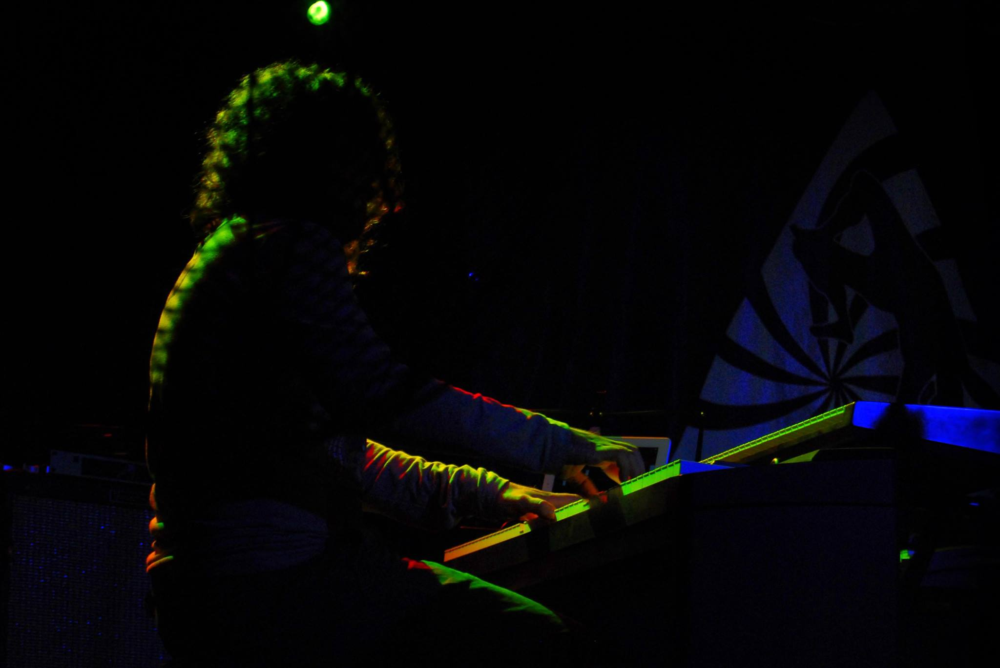

Music
I am very passionate about the music itself, which comes from my dad who is a professional pianist that I really admire. I listen to many many different styles of music. My favourite include classical, jazz, progressive rock, reggae, to name a few.
I have played for many different bands but currently I am with the awesome Prog-Rock band Sweet Hole . It's a pleasure to be with all time friends playing and composing themes that we really like.
